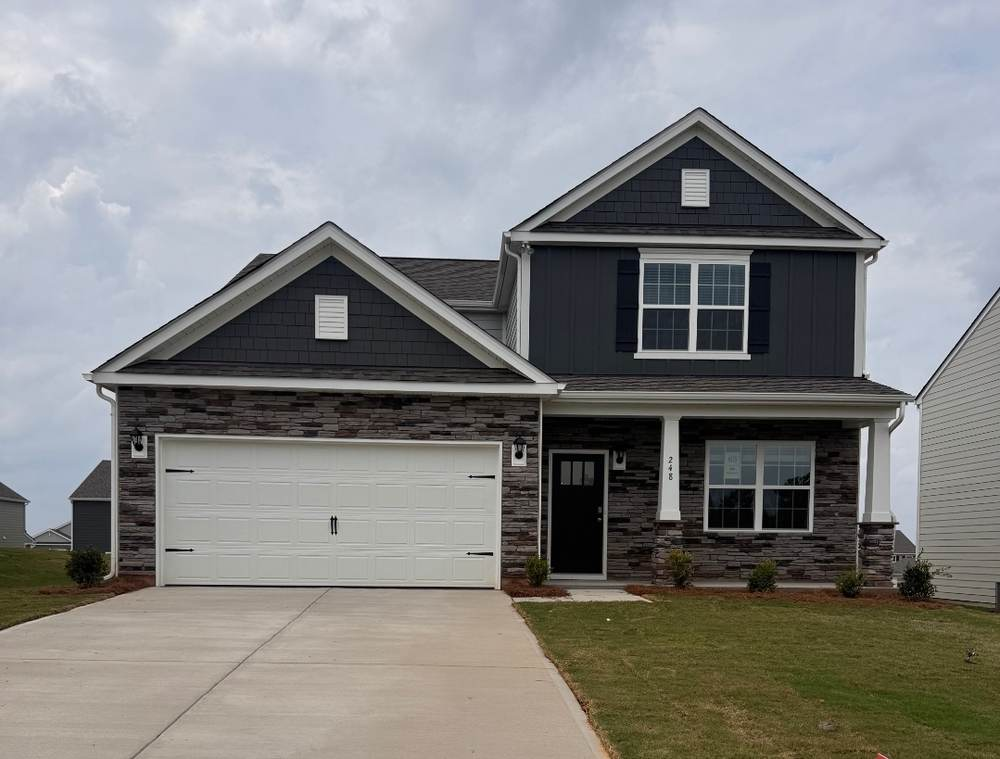
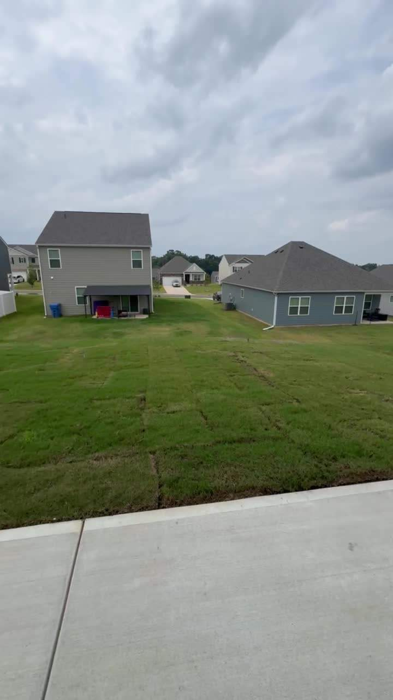
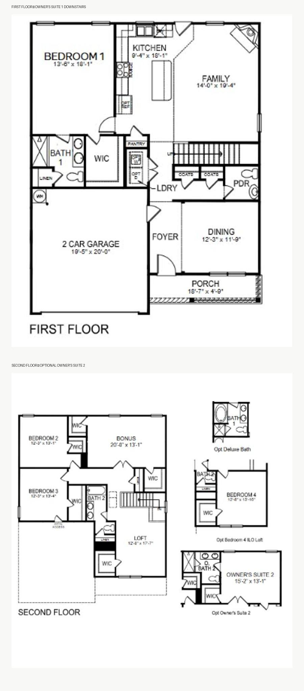

A dual-primary Winston plan in a small city with two unusually large employment catalysts.
This is a four-bedroom Winston plan in Brinkley Ridge. The house itself is a big part of why I like the deal: 2,565 square feet, a large loft, two-car garage, and — most importantly — a full owner’s suite downstairs plus a second owner’s suite upstairs.
The bigger reason I like it is Kings Mountain. It sits in the Charlotte metro — roughly 35 miles west of uptown, about a 35–40 minute drive via I-85 in normal traffic — so I think of it as a Charlotte-area suburb/exurb rather than an isolated small town. It also has two economic projects nearby that are enormous relative to the size of the town: the permanent Catawba Two Kings Casino resort being built out now, and Albemarle’s proposed reopening of the Kings Mountain lithium mine. I don’t think today’s home prices fully reflect what the town may look like if both projects reach maturity. That’s the appreciation thesis here — not a guarantee, but the main reason I’m comfortable with lower current cash flow.
I already own this exact Winston floor plan, and that experience is one of the reasons I’m comfortable buying another one. When the other house became available, I had a line of people interested in renting it. There are floor plans that look fine on a spreadsheet and floor plans that tenants actually respond to; this is one I’ve already watched people respond to.
The downstairs owner’s suite is probably my favorite feature. It isn’t just a bedroom downstairs — it is a real primary suite with its own full bathroom and walk-in closet. That works for multigenerational families, households with an older parent, couples who prefer living mainly on one floor, or tenants who simply want the primary bedroom separated from the upstairs bedrooms.
The 4.3% rate is attractive, but this is not a 30-year fixed mortgage. It is a 7/6 adjustable-rate mortgage: the initial rate is fixed for seven years, then the rate can adjust every six months according to the loan’s index, margin and caps.
I’m underwriting this as a seven-year financing window. Before the first reset, the investment needs to be looked at again from scratch: value, rent, market rates, remaining loan balance and whether the property still earns enough at the reset rate.
The possible paths are to refinance, keep the ARM if the economics still work, sell, or complete a 1031 exchange. None of those future options should be treated as guaranteed.
Kings Mountain is part of the Charlotte metro and sits roughly 35 miles west of uptown — about a 35–40 minute drive via I-85 in normal traffic. I think of it as a Charlotte-area suburb/exurb with its own small-town identity. That matters because tenants can still reach the larger Charlotte job market, while the local employment base is expanding on its own. What interests me most is the scale of the new employment projects relative to the existing city, not simply that the projects exist.
The casino is already operating in phases while the permanent $1.25 billion resort is being completed. Albemarle’s lithium mine is a different category: it is a proposed project that continues to advance, but it still depends on permitting, technical work and a final development decision.
My bet is not that appreciation is certain. It is that owning housing before these employment questions are fully answered gives this property more upside than a typical new-build rental with the same current cash flow.
Brinkley Ridge adds something important for a family rental: this is not just a house on a street. D.R. Horton lists a community pool, playground and cabana, with direct access to I-85 and Kings Mountain amenities nearby.
Neighborhood swimming pool — a meaningful family amenity during the Carolina summer.
Dedicated children’s play area inside the community.
Community gathering space beside the amenity area.
| Community | Brinkley Ridge · D.R. Horton |
| Plan | Winston · selected dual-owner’s-suite configuration |
| Living area | 2,565 sqft |
| Bedrooms | 4 |
| Bathrooms | 3 full + 1 half* |
| Garage | 2-car · 19'5" × 20'0" |
| Owner’s suite 1 | Main floor · 13'8" × 18'1" · full bath + WIC |
| Owner’s suite 2 | Upstairs · 15'2" × 13'1" · en-suite + walk-in closets |
| Loft | 12'8" × 17'7" |
| Family room | 14'10" × 19'4" |
| HOA | $770/year modeled |
*Current public listings conflict between 2.5 and 3.5 baths. The floor plan supplied for this configuration supports 3.5; final builder documents should control before publication.


This is a proposed investment and has not closed. Purchase terms, financing, rent and returns are underwriting assumptions and can change. The 4.0% appreciation figure is a forecast, not an operating result or guarantee. The lithium mine remains a proposed project subject to approvals and final development decisions. Community amenity and Charlotte-distance information is from D.R. Horton and Cleveland County tourism sources. Financial figures are taken from the NC-02 / “brinkley coles winston” row in the supplied portfolio workbook.